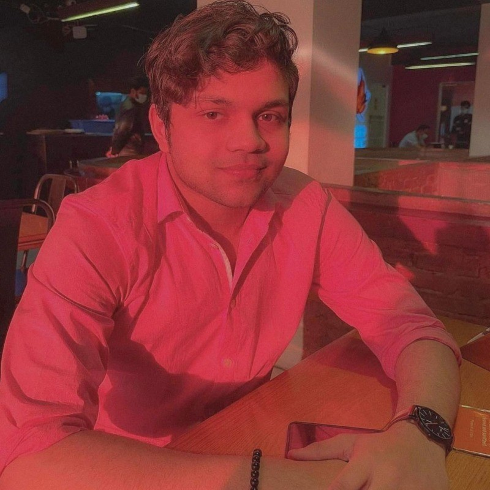

Farhan Nadim Haque

Summary
I love learning and I think that makes me a really good developer because of the way technology changes you can never stop learning
Education
Bachelors of Engineering - University of Texas at Arlington (Graduation Date - 2027)
Work Experience
Research Assistant - University of Texas at Arlington (April 2025 - Present)
- Conducting research on object similarity detection using computer vision and neural networks, starting with geometric shape analysis and progressing toward predictive modeling of hand movements.
- Independently studying neural networks and CV to support model design and data analysis tasks.
Software Engineering Fellow - Headstarter AI (June 2024 - Aug 2024)
- Gained industry insights from 10+ ex-tech leads through weekly meetings and conferences by attending
sessions with professionals from Google, Amazon, and Meta
- Refined problem-solving skills using Python through weekly coding interview practice by solving 50+
LeetCode problems and mock interviews with industry professionals.
Computer Science Tutor, University of Texas at Arlington (February 2023 - May 2023)
- Taught C programming concepts, including pointers, memory management, and data structures
- Received positive feedback for inclusive instruction style, demonstrating patience, adaptability, and a
commitment to accessible education in computer science topics such as C programming, pointers, and
algorithmic thinking.
Skills
- C++
- Python
- HTML
- CSS
- JavaScript
Organizations
Code Path Fellow, Google Developer Group, Meta Horizon Creator, HBCU 20x20 Scholar
Projects
Github Link